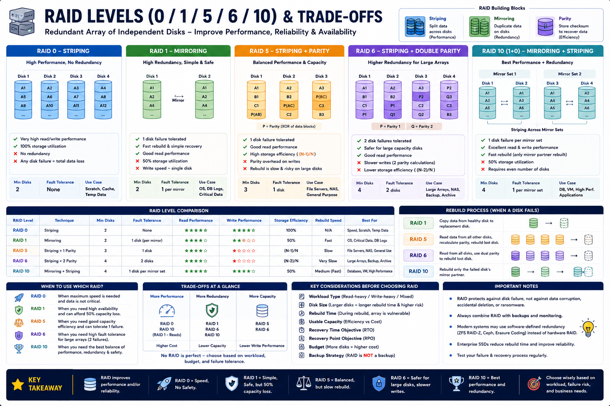

Striping, mirroring, parity, rebuild risk — Staff Engineer level
The Big Picture
A single disk is a single point of failure. RAID combines multiple disks using striping, mirroring, and parity to improve performance, availability, and reliability simultaneously.
Three RAID Building Blocks
Striping
Parallel I/O. Higher throughput. No redundancy.
Mirroring
Immediate redundancy. Fast recovery. 50% capacity.
Parity
Reconstruct lost data. Better efficiency than mirror. CPU overhead.
RAID 0 — Pure Striping
Strengths
Weaknesses
Use for: Scratch space, rendering cache, temp data. Never for production databases.
RAID 1 — Mirroring
Strengths
Weaknesses
Use for: OS disks, DB transaction logs, critical metadata, small production DBs.
RAID 5 — Striping + Distributed Parity
Strengths
Weaknesses
Use for: File servers, NAS, read-heavy workloads, backup repos.
RAID 6 — Striping + Double Parity
Strengths
Weaknesses
Use for: Large HDD arrays, enterprise storage, backup appliances, archives.
RAID 10 — Mirroring + Striping
Strengths
Weaknesses
Use for: OLTP databases, virtualization, financial systems, high-performance apps.
Full RAID Comparison
| RAID | Technique | Read | Write | Fault Tolerance | Capacity | Rebuild |
|---|---|---|---|---|---|---|
| RAID 0 | Striping | ⭐⭐⭐⭐⭐ | ⭐⭐⭐⭐⭐ | None | 100% | N/A |
| RAID 1 | Mirroring | ⭐⭐⭐⭐⭐ | ⭐⭐⭐ | 1 disk/pair | 50% | Fast |
| RAID 5 | Stripe+Parity | ⭐⭐⭐⭐ | ⭐⭐⭐ | 1 disk | (N−1)/N | Slow ⚠ |
| RAID 6 | Stripe+2 Parity | ⭐⭐⭐⭐ | ⭐⭐ | 2 disks | (N−2)/N | Very slow ⚠ |
| RAID 10 | Mirror+Stripe | ⭐⭐⭐⭐⭐ | ⭐⭐⭐⭐⭐ | 1 disk/pair | 50% | Medium |
Rebuild Risk — Why It Matters
Modern HDDs are 16–20 TB. Rebuilding one disk reads every other surviving disk.
RAID 5 with large HDDs
High URE (unrecoverable read error) risk during rebuild. A single sector read error destroys the array. Use RAID 6 instead.
RAID 6 / RAID 10
RAID 6 survives a second failure during rebuild. RAID 10 rebuilds only its mirror pair — fast and low-risk.
Real-World Decision Guide
| Workload | Recommended RAID | Reason |
|---|---|---|
| PostgreSQL / MySQL | RAID 10 | Low write latency, fast rebuild |
| VMware / KVM hosts | RAID 10 | High random IOPS, fast recovery |
| DB transaction logs | RAID 1 | Simple, fast, reliable |
| NAS file server | RAID 5 or 6 | Read-heavy, capacity efficiency |
| Large HDD backup array | RAID 6 | Dual parity protects during rebuild |
| Scratch / cache | RAID 0 | Maximum throughput, no durability needed |
| Cloud managed storage | Software replication | EBS/GCS already provides redundancy |
Staff Engineer Thinking
Junior
Which RAID level is fastest?
Senior
Should we use RAID 5 or RAID 10?
Staff asks
Production Failure Scenarios
RAID 0 Total Loss
Cause: Single disk failure · Fix: Never use RAID 0 for production data
RAID 5 Rebuild Failure
Cause: Second disk fails during 30-hour rebuild · Fix: Use RAID 6 for large-capacity HDD arrays
Slow Database on RAID 5
Cause: Parity write overhead on write-heavy OLTP · Fix: Move to RAID 10
Wasted Capacity on RAID 10
Cause: Using RAID 10 for archival storage (50% waste) · Fix: Use RAID 6 or object storage for cold data
Modern Alternatives to Hardware RAID
| Technology | How It Replaces RAID |
|---|---|
| ZFS RAIDZ | Software parity with checksums and self-healing |
| Ceph | Distributed replication / erasure coding at scale |
| AWS EBS | Managed replication across multiple AZs |
| HDFS | Block-level 3× replication across nodes |
| Erasure Coding | Better capacity efficiency than RAID 6 at scale |
In cloud and distributed systems, software-defined replication scales better than hardware RAID. Hardware RAID is most relevant for on-prem servers.
Production Design Checklist
Key Takeaways
